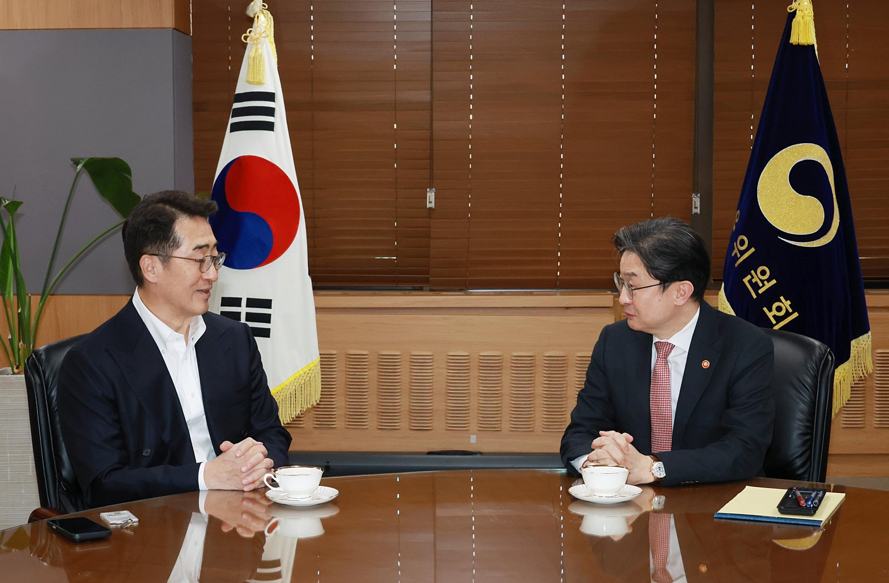
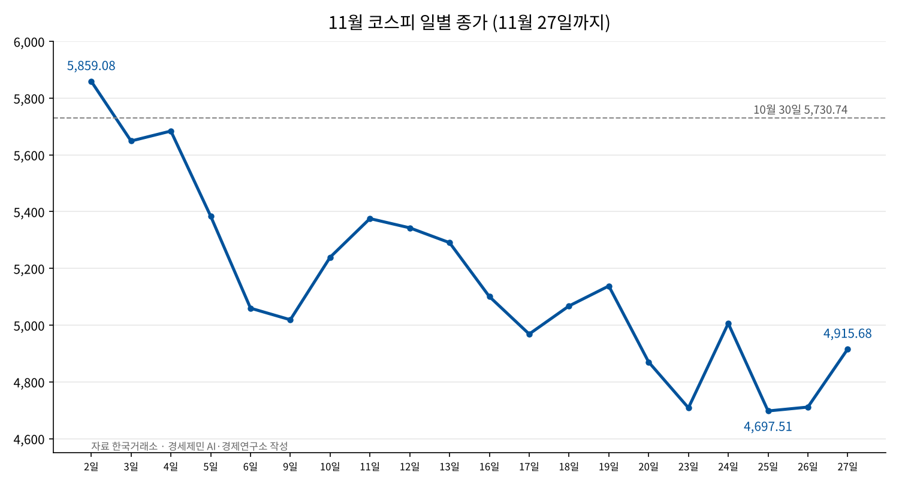
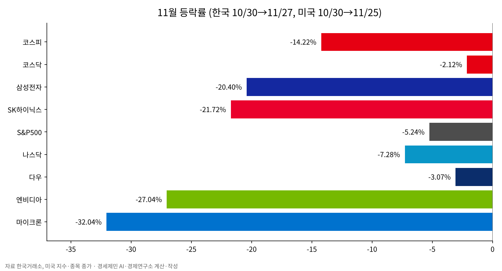
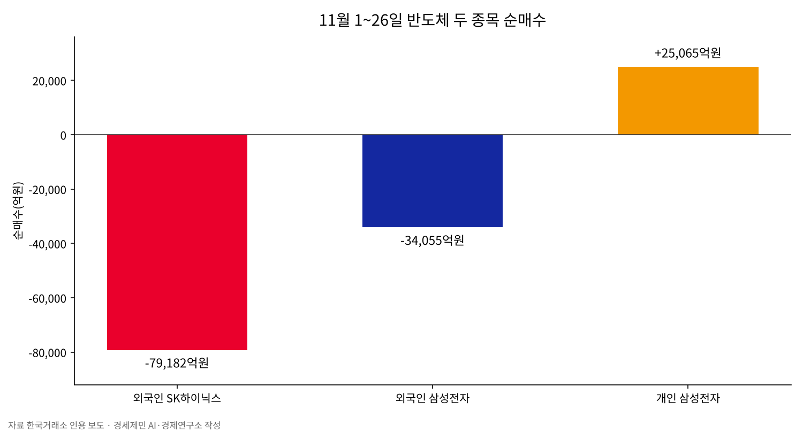
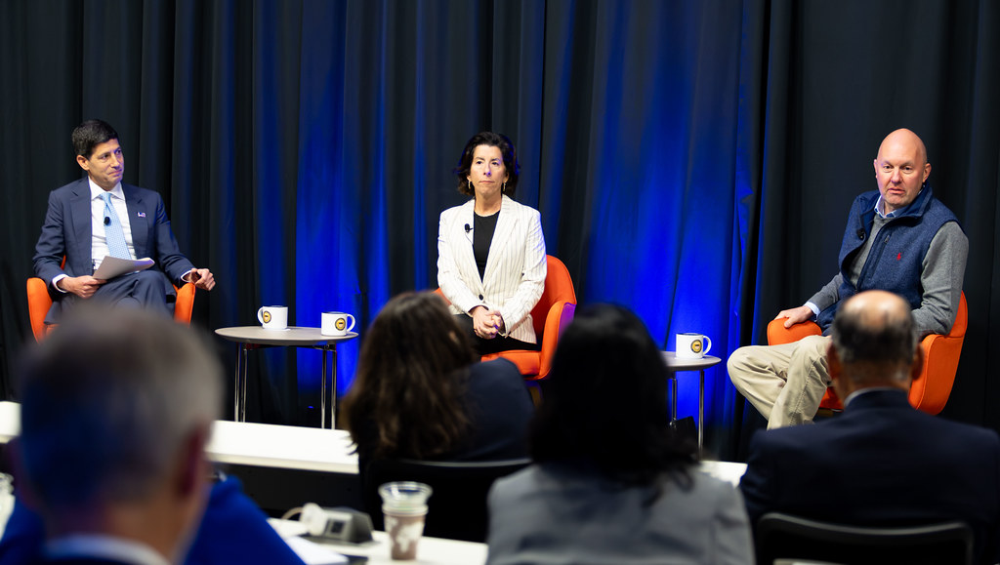

[11월 증시브리핑] 수출 1조달러 넘은 달, 코스피 14.22% 하락
반도체 수출 294.4% 증가, 삼성전자 주가 20.40% 하락
AI경제저널=김갑봉 기자 | 코스피가 11월 한 달 동안 14.22% 떨어졌다. 10월 30일 5,730.74에서 11월 27일 4,915.68로 815.06포인트 내렸다(한국거래소, 연구소 계산). 이 글은 11월 27일 종가 기준이고, 11월 마지막 거래일인 30일 하루가 남았다. 코스피는 10월에도 16.19% 내려 두 달 연속 두 자릿수 하락을 앞두고 있다.
같은 달 올해 누적 수출은 사상 처음 1조달러를 넘었다(1월 1일~11월 20일 1조76억달러). 관세청 잠정치로 11월 1~20일 수출은 774억달러로 1년 전보다 101.5% 늘었다. 이 가운데 반도체는 384억6,600만달러로 294.4% 늘었다. 반도체 수출 294.4% 증가와 삼성전자 주가 20.40% 하락은 같은 달의 숫자다.
외국인은 11월 1~25일 유가증권시장에서 15조원 넘게 순매도했다(한국거래소 자료 인용 보도). 삼성전자는 27일 3분기 배당 30조30억원을 지급했다. 배당기준일 외국인 보유 주식 수로 계산한 외국인 몫은 15조2,858억원이다. 외국인이 판 금액과 외국인이 받은 배당은 같은 달의 숫자다.
이 글은 한국거래소·한국은행·관세청·미국 노동통계국 자료로 누가 팔고 누가 받았는지, 금리가 어디로 움직였는지, 12월에 무엇을 볼지를 짚는다. 기준시점은 한국 11월 27일 종가, 미국 11월 25일 종가다.
매도 사이드카 다섯 번, 고점 5,859에서 저점 4,697

11월 코스피 종가 최고치는 첫 거래일인 2일 5,859.08이었다. 최저치는 25일 4,697.51이다. 한 달 안에서 고점과 저점의 차이는 1,161.57포인트, 고점 대비 19.83%다(연구소 계산).
하락은 세 고비로 왔다. 첫째 고비는 5~6일이다. 5일 코스피는 5.28% 내린 5,383.80에 마감했다.
6일에는 장 시작 3분 만에 매매를 20분 멈추는 서킷브레이커(Circuit Breaker, 매매 일시정지)가 걸렸다. 올해 유가증권시장 열한 번째 발동이다. 6일 종가는 5,059.69였다.
둘째 고비는 16~20일이다. 17일 코스피는 4,968.48로 마감해 2월 2일 이후 처음 5,000 아래로 내려갔다. 20일에는 5.21% 내린 4,869.96에 마감했다.
셋째 고비는 23~25일이다. 23일 3.31%, 25일 6.16% 내렸다. 그 사이 24일에는 6.32% 올랐다.

사이드카(Sidecar)는 선물 가격이 급하게 움직일 때 프로그램 매매 호가 효력을 5분 멈추는 장치다. 11월 코스피 매도 사이드카는 5일, 6일, 20일, 23일, 25일 다섯 번 걸렸다.
25일 발동은 올해 코스피 서른세 번째 매도 사이드카다. 코스피 매수 사이드카는 10일과 24일에 걸렸다(한국거래소 발동 순번으로 연구소 집계, 25일까지). 27일에는 코스닥에 매수 사이드카가 걸렸다.
반도체 두 종목은 지수보다 더 빠졌다. 삼성전자는 10월 30일 22만5,000원에서 11월 27일 17만9,100원으로 20.40% 내렸다. SK하이닉스는 141만8,000원에서 111만원으로 21.72% 내렸다(한국거래소 종가, 연구소 계산).
두 종목 모두 2일 종가가 월중 최고, 25일 종가가 월중 최저였다. 코스닥은 724.38에서 708.99로 2.12% 내리는 데 그쳤다.
미국보다 깊은 하락, 엔비디아 경영진 공백
미국 증시도 11월에 내렸지만 낙폭은 한국보다 작았다. 에스앤피(S&P, Standard & Poor's)500은 10월 30일 7,580.07에서 11월 25일 7,182.78로 5.24% 내렸다. 같은 기간 나스닥은 7.28%, 다우는 3.07% 내렸다(미국 지수 종가, 연구소 계산). 미국은 26일 추수감사절로 쉬었고, 27일 장은 이 글을 쓴 시점에 끝나지 않았다.

엔비디아는 12일 미국 증권거래위원회(SEC, Securities and Exchange Commission)에 공시를 냈다. 이사회가 11일 젠슨 황 최고경영자(CEO)의 사장·최고경영자·이사직 사임을 받아들였다는 내용이다. 엔비디아는 17일(미국 시각) 3분기 매출 1,158억달러를 발표했다. 1년 전보다 103% 늘어난 숫자다(엔비디아 실적 발표).
엔비디아 주가는 실적 발표 다음 날인 18일부터 20일까지 사흘 동안 19.25% 내렸다. 엔비디아 이사회는 23일 황을 복귀시켰고, 그날 주가는 31.48% 올랐다. 엔비디아 주가는 10월 30일 204.64달러에서 11월 25일 149.30달러로 27.04% 내렸다. 마이크론은 884.74달러에서 601.25달러로 32.04% 내렸다(나스닥 종가, 연구소 계산).
마이크론 주가는 24일(미국 시각) 11.01% 내렸다(나스닥 종가). 다음 날인 한국시각 25일 삼성전자는 9.87%, SK하이닉스는 11.05% 내렸다. 코스피 낙폭 14.22%는 S&P500 낙폭 5.24%의 2.7배다(한국 27일, 미국 25일 종가 기준, 연구소 계산).
외국인이 판 반도체, 개인이 받은 삼성전자
외국인 매도는 반도체 두 종목에 몰렸다. 한국거래소 자료를 인용한 보도로 11월 1~26일 외국인은 삼성전자를 3조4,055억원어치 순매도했다. 같은 기간 SK하이닉스 순매도는 7조9,182억원으로, 두 종목 합계 11조3,237억원이다. 같은 기간 개인은 삼성전자를 2조5,065억원어치 순매수했다.
11월 1~25일 외국인 순매도 합계는 보도마다 집계 기준이 달라 15조6,129억~16조5,987억원 사이다(한국거래소 자료 인용 보도, 연구소 계산). 연초부터 25일까지 쌓인 외국인 순매도는 225조1,705억원이다(한국거래소 일별 순매매 합산 보도, 대체거래소 넥스트레이드 제외).

11월 마지막 주 개인은 급락일에 사고 반등일에 팔았다. 코스피가 6.16% 내린 25일 개인은 1조4,224억원어치를 순매수했고, 외국인은 1조8,993억원어치를 순매도했다.
코스피가 6.32% 오른 24일 개인은 2조4,153억원어치를 순매도했다. 4.34% 오른 27일에도 개인은 1조7,746억원어치를 순매도했다. 두 반등일에 외국인과 기관은 순매수했다(한국거래소 잠정치).
빚을 내 산 주식은 한 달 새 4분의 1 가까이 줄었다. 증권사에서 돈을 빌려 주식을 사는 신용거래융자 잔고는 10월 12일 34조2,887억원이었다. 11월 11일 잔고는 25조9,284억원으로 한 달 새 24.4% 줄었다(금융투자협회).
투자자가 주식을 사려고 증권사에 맡긴 투자자예탁금은 11월 19일 81조5,669억원으로 연중 최저였다. 6월 4일 역대 최대치 139조6,947억원보다 41.6% 적다(금융투자협회, 연구소 계산).
삼성전자 배당 30조30억원은 보통주와 우선주 1주당 4,601원이다. 삼성전자는 기준일인 9월 30일 주주에게 27일 이 배당을 지급했다(삼성전자 공시). 배당기준일 외국인 보유 주식은 보통주 27억1,665만주와 우선주 6억562만주였다. 여기에 주당 4,601원을 곱한 외국인 몫은 15조2,858억원, 전체의 50.9%다(보유 주식 수는 보도 인용, 금액은 연구소 검산).
11월 1~26일 개인이 산 삼성전자 2조5,065억원어치는 기준일 뒤에 산 주식이라 이번 배당을 받지 못한다. 배당은 기준일 주주에게 가고, 주가 하락은 지금 가진 사람이 진다(연구소 판단).
금리 올린 한국은행, 12월 인상 확률 97%대의 연준

한국은행 금융통화위원회는 26일 기준금리를 연 3.00%에서 3.25%로 0.25%포인트 올렸다. 7월 16일과 8월 27일에 이어 올해 세 번째 인상이다. 위원 7명 가운데 5명이 인상에 찬성했고, 2명은 동결 의견을 냈다.
한국은행은 같은 날 올해 성장률 전망을 3.3%에서 3.9%로, 내년 전망을 2.9%에서 4.1%로 올렸다. 올해 소비자물가 상승률 전망은 2.7%로 유지했다(한국은행).
미국 노동통계국(BLS, Bureau of Labor Statistics)은 10일 10월 소비자물가가 전월보다 0.4% 올랐다고 발표했다. 식료품·에너지를 뺀 근원물가는 0.3% 올랐다. BLS는 2025년 10월 자료를 연방정부 예산 공백으로 모으지 못해 전년 대비 상승률을 내지 않았다. BLS가 6일 발표한 10월 비농업 일자리는 16만5,000개 늘었고, 실업률은 4.1%였다.
미국 정책금리는 연 3.75~4.00%다(연방준비제도). 시카고상품거래소 페드워치(FedWatch)가 금리 선물 가격으로 계산한 12월 0.25%포인트 인상 확률은 24~25일 97.4~97.8%였다. 미국 10년물 국채금리는 13일 5.15%까지 올랐다가 25일 4.85%로 내렸다(미국 재무부).
원달러 환율은 한 달 동안 3.6원 올랐다. 10월 30일 1,334.3원이었고 11월 27일은 1,337.9원이다. 11월 종가는 19일 1,330.0원과 6일 1,356.6원 사이에서 움직였다(한국은행, 오후 3시 30분 종가).
국제유가는 내렸다. 서부텍사스산원유(WTI, West Texas Intermediate) 현물은 배럴당 107.56달러(10월 30일)였다. 11월 24일에는 82.24달러로 23.5% 내렸다(미국 에너지정보청, 연구소 계산).
12월에 볼 날짜와 숫자
11월 마지막 주말부터 일정이 몰린다. 11월 29일 증권시장안정펀드 투자관리위원회가 긴급 회의를 연다. 30일에는 이억원 금융위원장이 5대 금융지주 회장, 주요 금융협회장과 시장 안정 방안을 논의한다. 증권시장안정펀드는 증시가 크게 흔들릴 때 금융회사들이 모은 돈으로 주식을 사들이는 기금이다.
12월 1일에는 11월 수출입동향, 2일에는 11월 소비자물가가 나온다. 3일(미국 시각) 젠슨 황 엔비디아 최고경영자가 미국 상원 은행위원회 공개 청문회에 나간다. 4일 한국시각 오후 10시 30분에는 BLS의 11월 고용보고서가 나온다. 미국 연방공개시장위원회(FOMC, Federal Open Market Committee)는 12월 8~9일 열리고, 결과는 한국시각 10일 새벽에 나온다.
수급에서는 세 숫자를 본다. 첫째, 외국인이 삼성전자를 사흘 넘게 이어서 사는가. 외국인은 26일 삼성전자를 971억원어치 팔았고, 27일에는 4,424억원어치 샀다.
둘째, 신용거래융자 잔고가 25조원대에서 멈추는가. 셋째, 증권사 신용공여 담보비율 유지 의무 면제가 끝나는 2027년 1월 31일 전후의 반대매매 규모다.
금융감독원은 6일 금융투자협회와 긴급 시장상황점검회의를 열고 관계기관과 논의해 이 의무를 면제하기로 했다. 면제 기간은 11월 9일부터 2027년 1월 31일까지이고, 신용융자를 내줄 때 담보를 140% 이상 확보하는 의무는 그대로다(금융위원회·금융감독원). 면제가 끝난 뒤에는 증권사가 담보 부족 계좌 주식을 강제로 파는 반대매매가 한꺼번에 나올 수 있다(연구소 판단). 삼성전자는 남은 주주환원 55조~75조원의 규모와 실행 방안을 2027년 1월 말 이사회에서 확정한다(삼성전자).
제언, 배당과 매도를 한 표에
첫째, 금융위원회와 한국거래소는 외국인 순매매 통계 옆에 외국인이 받은 배당금을 분기마다 나란히 공개할 필요가 있다. 11월 1~25일 외국인은 유가증권시장에서 15조원 넘게 순매도했고, 27일 삼성전자 한 회사에서 배당 15조2,858억원을 받았다. 한국거래소 투자자별 매매 통계에는 매매 금액만 나온다.
둘째, 금융위원회와 금융투자협회는 담보비율 면제가 끝나기 전에 면제 기간 반대매매 유예 규모와 만기 분포를 공개할 필요가 있다. 면제는 반대매매를 없애지 않고 뒤로 미뤘다(연구소 판단). 개인투자자는 언제 얼마가 풀리는지를 미리 알아야 한다.
셋째, 국회는 반도체 수출 증가가 임금·고용·협력업체 납품단가로 얼마나 이어졌는지 분기마다 보고받는 장치를 검토할 필요가 있다. 수출 1조달러를 넘은 달에 그 과실이 누구에게 갔는지 묻는 일도 이 숫자에서 시작한다. 지수가 내린 이유를 보는 일과 그 하락을 누가 떠안았는지 보는 일은 다른 결과로 이어진다.
참고문헌
- 금융감독원 전자공시시스템, 「삼성전자 현금ㆍ현물배당결정」, 삼성전자, 2026년 10월 29일, https://dart.fss.or.kr/dsaf001/main.do?rcpNo=20261029800101
- 삼성전자, 「삼성전자, 2026년 3분기 실적 발표」, 삼성전자 뉴스룸, 2026년 10월 29일, https://news.samsung.com/kr/%EC%82%BC%EC%84%B1%EC%A0%84%EC%9E%90-2026%EB%85%84-3%EB%B6%84%EA%B8%B0-%EC%8B%A4%EC%A0%81-%EB%B0%9C%ED%91%9C
- 한국은행, 「통화정책방향(2026.11.26)」, 한국은행, 2026년 11월 26일, https://www.bok.or.kr/portal/bbs/P0000559/view.do?depth=200690&menuNo=200690&nttId=11067084&programType=newsData&relate=Y
- 한국은행, 「한국은행 기준금리 추이」, 한국은행, 2026년 11월 26일 확인, https://www.bok.or.kr/portal/singl/baseRate/list.do?dataSeCd=01&menuNo=200643
- 관세청, 「2026년 11월 1일 ~ 11월 20일 수출입 현황 [잠정치]」(본문과 붙임 PDF), 관세청 보도자료 게시판, 2026년 11월 23일, https://www.customs.go.kr/kcs/na/ntt/selectNttList.do?bbsId=1362&mi=2891
- 금융위원회·금융감독원, 「증시 변동성 완화를 위한 신용공여 담보비율 유지의무 면제조치 시행」, KDI 경제교육·정보센터 경제정책자료 게재, 2026년 11월 9일, https://eiec.kdi.re.kr/policy/materialView.do?num=289219
- U.S. Bureau of Labor Statistics, 「Consumer Price Index Summary, October 2026」, BLS, 2026년 11월 10일, https://www.bls.gov/news.release/cpi.nr0.htm
- U.S. Bureau of Labor Statistics, 「Employment Situation Summary, October 2026」, BLS, 2026년 11월 6일, https://www.bls.gov/news.release/empsit.nr0.htm
- NVIDIA Corporation, 「Form 8-K (Item 5.02), Date of Report November 11, 2026」, SEC EDGAR, 2026년 11월 12일, https://www.sec.gov/Archives/edgar/data/0001045810/000104581026000082/nvda-20261111.htm
- NVIDIA Corporation, 「NVIDIA Announces Financial Results for Third Quarter Fiscal 2027」, SEC EDGAR Form 8-K Exhibit 99.1, 2026년 11월 17일, https://www.sec.gov/Archives/edgar/data/0001045810/000104581026000088/q3fy27pr.htm
- NVIDIA Corporation, 「Form 8-K Exhibit 99.1, Jensen Huang reinstated」, SEC EDGAR, 2026년 11월 23일, https://www.sec.gov/Archives/edgar/data/0001045810/000104581026000090/nov23pressrelease.htm
- Board of Governors of the Federal Reserve System, 「Federal Reserve issues FOMC statement」, 2026년 10월 28일, https://www.federalreserve.gov/newsevents/pressreleases/monetary20261028a.htm
- Board of Governors of the Federal Reserve System, 「Meeting calendars and information」, 2026년 11월 27일 확인, https://www.federalreserve.gov/monetarypolicy/fomccalendars.htm
- U.S. Department of the Treasury, 「Daily Treasury Par Yield Curve Rates, November 2026」, 2026년 11월 27일 확인, https://home.treasury.gov/resource-center/data-chart-center/interest-rates/daily-treasury-rates.csv/all/202611?type=daily_treasury_yield_curve&field_tdr_date_value_month=202611&page&_format=csv
- U.S. Energy Information Administration via Federal Reserve Bank of St. Louis FRED, 「Crude Oil Prices: West Texas Intermediate (WTI) - Cushing, Oklahoma (DCOILWTICO)」, 2026년 11월 27일 확인, https://fred.stlouisfed.org/series/DCOILWTICO
- Federal Reserve Bank of St. Louis FRED, 「S&P 500 (SP500), NASDAQ Composite Index (NASDAQCOM), Dow Jones Industrial Average (DJIA)」, 2026년 11월 27일 확인, https://fred.stlouisfed.org/series/SP500
- 한국은행 경제통계시스템, 「원/달러 환율(종가 15:30), 통계표 731Y003」, 2026년 11월 27일 확인, https://ecos.bok.or.kr/
- Nasdaq, 「NVIDIA Corporation (NVDA) Historical Quotes」, 2026년 11월 27일 확인, https://api.nasdaq.com/api/quote/NVDA/historical?assetclass=stocks&fromdate=2026-10-29&todate=2026-11-27&limit=30
- Nasdaq, 「Micron Technology (MU) Historical Quotes」, 2026년 11월 27일 확인, https://api.nasdaq.com/api/quote/MU/historical?assetclass=stocks&fromdate=2026-10-29&todate=2026-11-27&limit=30
- Associated Press, 「How major US stock indexes fared Wednesday 11/25/2026」, 2026년 11월 25일, https://krmg.com/2026/11/25/how-major-us-stock-indexes-fared-wednesday-11-25-2026/
- 스트레이트뉴스, 「外人 코스피 순매도 225조 누적…전년 대비 30배」, 2026년 11월 25일, https://www.straightnews.co.kr/news/articleView.html?idxno=316228
- 디지털타임스, 「11.3조 던진 外人, SK하이닉스만 '유턴'…반도체 투톱, 변곡점 섰나」, 2026년 11월 27일, https://www.dt.co.kr/article/12097566
- 아시아경제, 「반도체 급락에 코스피 6% 빠졌다…4600선 마감」, 2026년 11월 25일, https://view.asiae.co.kr/article/2026112515501198608
사진 출처
- 사진1: 금융위원회 제공(2026.11.26 사진뉴스)
- 사진2: 미국 연방준비제도 이사회(퍼블릭 도메인, 2026.11.16)
- 도표 셋: 경세제민 AI·경제 연구소 작성
※ 이 기사는 인공지능기자 위민아이(Wemin_AI)와 협력해 작성했습니다.
관련기사
- [주간 증시브리핑] 코스피 4.56% 반등, 미 10년물 국채 5.10%와 젠슨 황 사임
- [주간 증시브리핑] 코스피 11.71% 하락, 외국인 순매도 72.6%가 두 종목
- [10월 증시브리핑] 코스피 16.19% 하락, 받친 손은 기타법인
- 기준금리 3.25%로 0.25%포인트 인상, 새 가계대출 76%는 변동금리
저작권자 © AI경제저널 무단전재 및 재배포, AI학습 및 활용 금지